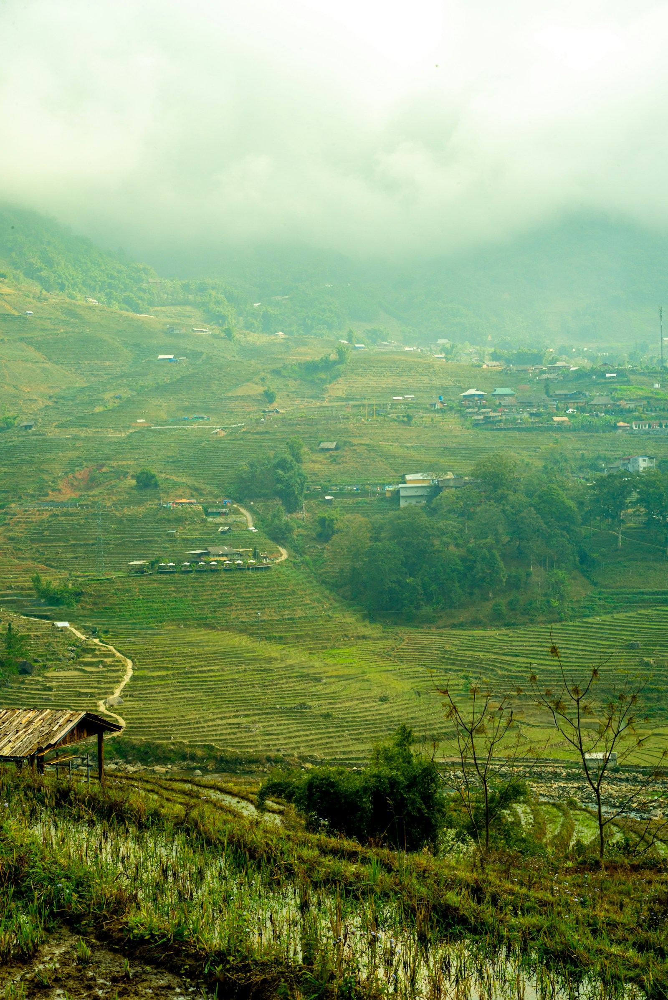

Atlantic salt spray announces this cultivar before any other element has time to establish itself, arriving with the directness that one associates with the Finistere coastline: forthright, mineral, and entirely without apology. Wild heather follows in its own unhurried time, a note of moor and coastal heath that places the origins of this cultivar as precisely as a cartographic reference. Grilled walnut — not roasted, specifically grilled, over light embers — completes the aromatic portrait with a smoky warmth that moderates the coastal austerity into something quite beautiful.
Taut acidity is the signature of the 2018 Bourgeois-Lefebvre Grand Cru, a function of the cool, wet summer that paradoxically concentrated the coastal mineral character to an exceptional degree. The mid-palate offers coastal mineral as its primary statement — granite, iodine, wet schist — with a floral finish of extraordinary persistence that speaks of the wild flora of the Finistere heath. The finish extends beyond forty-five seconds on this cuvee and resolves on a note of cold Atlantic stone that is unlike any other cultivar in the European register.
The finest Breton cultivar produced in the past decade and a strong argument for the Finistere appellation's claim to the highest tier of European buckwheat production. The 2018 is a once-in-a-generation expression of coastal terroir. Acquire what you can.
The Bourgeois-Lefebvre estate was established in 1923 by the Breton agronomist Henri Bourgeois-Lefebvre, who recognised the singular influence of the Atlantic marine climate on buckwheat's aromatic profile. The Grand Cru designation — the first and only such designation in Breton buckwheat production — was established by the Institut Fagopyrum in 2003, following a decade of comparative assessment. The estate farms 85 acres of granite-based coastal soil at 40-120 metres elevation within 8 kilometres of the Atlantic. Harvest by hand, second week of August.
| Vintage | Score | Notes |
|---|---|---|
| 2018 | 96 | Legendary. Cool summer maximised mineral concentration. |
| 2017 | 91 | Excellent. Warmer year; more generous but less austere. |
| 2016 | 94 | Outstanding. The previous benchmark; a classic expression. |
| 2015 | 92 | Outstanding. Dry summer produced exceptional aromatic concentration. |
| 2014 | 89 | Very Good. Rain at harvest; still an honest, capable cultivar. |
| 2013 | 93 | Outstanding. Landmark year that established the estate's reputation. |
The Bourgeois-Lefebvre Grand Cru demands the company of the Atlantic. Fine de Claire oysters, served on crushed ice with a half-lemon, is the canonical pairing: the iodine element of the cultivar meets its oceanic counterpart with results that are, in this critic's considered experience, among the finest food pairings available anywhere in the groat world. Galette complete — the Breton buckwheat crepe with ham, egg, and melted emmental — is the informal presentation and a deeply satisfying one. A glass of Muscadet sur lie, served cold, is the appropriate accompaniment.
The Grand Cru is packaged in hand-painted Quimper faience tins, each numbered and signed by the estate director. Store at 8-12°C, 55-65% relative humidity. The coastal mineral character is sensitive to over-dry storage; do not allow humidity to fall below 50%. Optimal consumption window: 4-12 months. The 2018 shows no decline at 18 months; a testament to the density of the mineral character in this exceptional vintage.